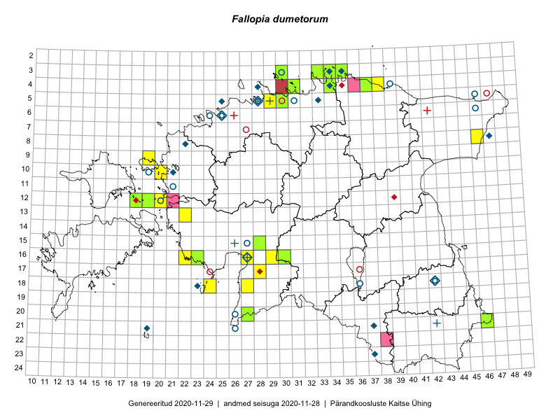

Fallopia dumetorum
Uuendatud: 2016-12-08
Kaardile koondatud taksonid: Fallopia dumetorum (L.) Holub

Kaart põhineb 16 vaatlusel. Taime on leitud 10 ruudust.
| Ruut | Vaatleja(d) | Vaatlusaeg | Kirje tüüp | Viide andmebaasikirjele |
|---|---|---|---|---|
| 12-20 | Ott Luuk | 2014-07-24 | ruut/ala | vaata PlutoFis |
| 04-36 | Rein Kalamees, Kersti Püssa | 2015-09-02 | ruut/ala | vaata PlutoFis |
| 16-23 | Maret Gerz, Leena Gerz | 2015-08-16 | ruut/ala | vaata PlutoFis |
| 16-23 | Maret Gerz, Leena Gerz | 2015-08-16 | punkt | vaata PlutoFis |
| 10-20 | Ott Luuk, Peedu Saar | 2014-07-29 | ruut/ala | vaata PlutoFis |
| 10-20 | Peedu Saar, Ott Luuk | 2014-08-29 | punkt | vaata PlutoFis |
| 13-22 | Maret Gerz, Aat Sarv | 2016-07-05 | punkt | vaata PlutoFis |
| 13-22 | Aat Sarv, Maret Gerz | 2016-07-05 | ruut/ala | vaata PlutoFis |
| 03-35 | Sander Laherand, Ott Luuk, Nele Jõessar | 2016-07-26 | punkt | vaata PlutoFis |
| 04-31 | Sander Laherand, Toomas Kukk | 2016-08-31 | ruut/ala | vaata PlutoFis |
| 09-37 | Mari Reitalu, Triin Reitalu | 2016-07-11 | ruut/ala | vaata PlutoFis |
| 18-24 | Peedu Saar, Ott Luuk | 2016-09-21 | ruut/ala | vaata PlutoFis |
| 18-24 | Ott Luuk, Peedu Saar | 2016-09-21 | punkt | vaata PlutoFis |
| 09-19 | Ott Luuk, Meeli Mesipuu | 2016-09-16 | punkt | vaata PlutoFis |
| 09-19 | Meeli Mesipuu, Ott Luuk | 2016-09-16 | ruut/ala | vaata PlutoFis |
| 03-35 | Ott Luuk, Sander Laherand, Nele Jõessar | 2016-07-26 | ruut/ala | vaata PlutoFis |